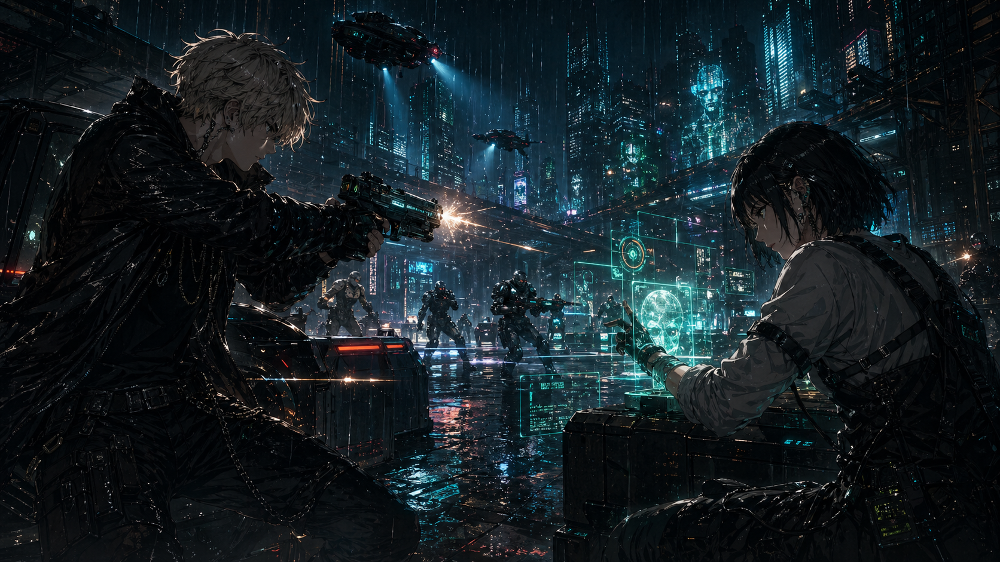
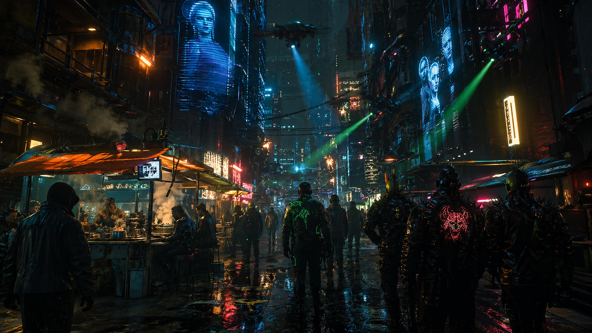
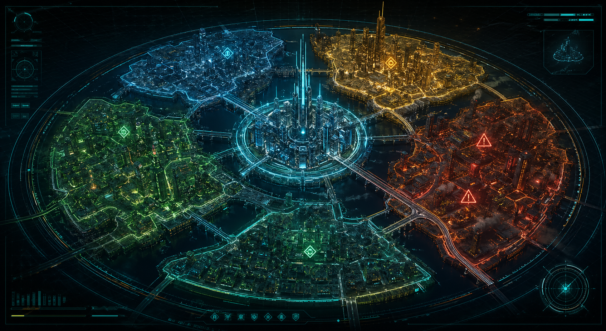
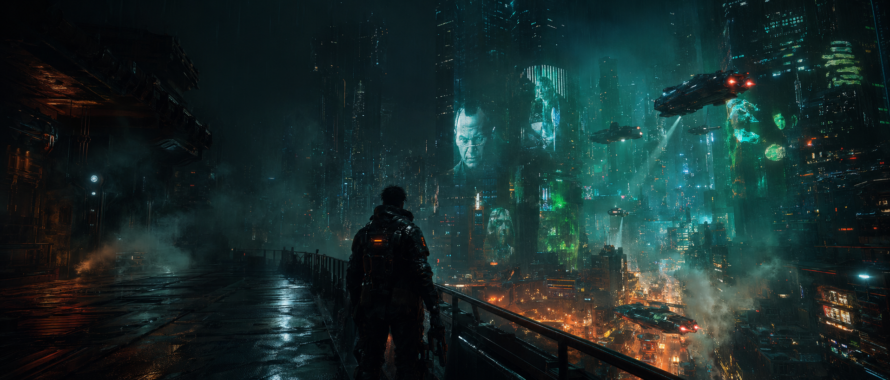
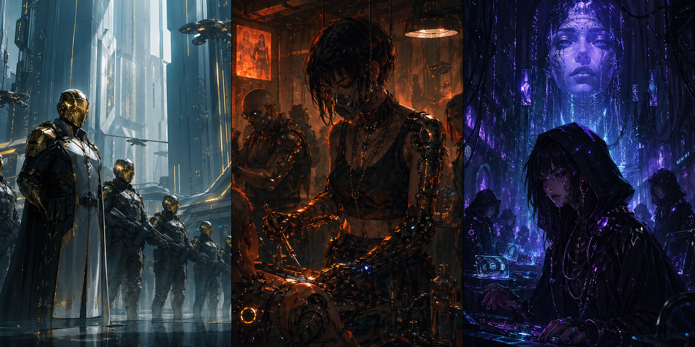
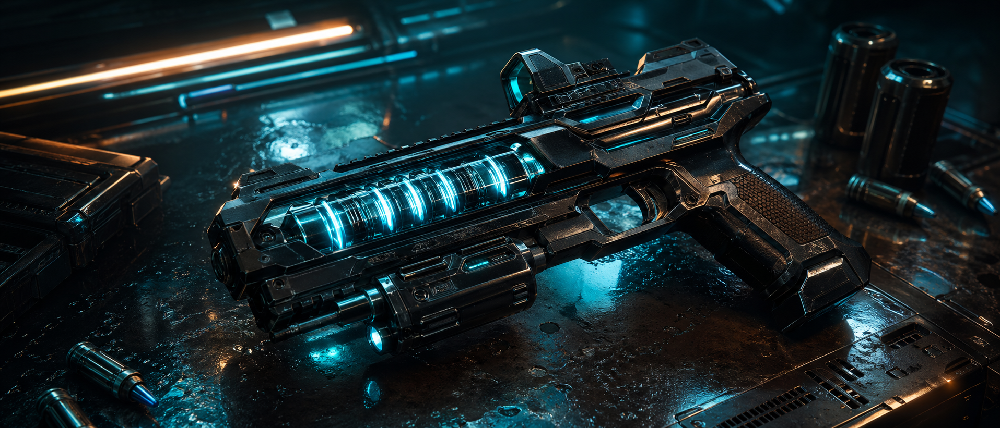
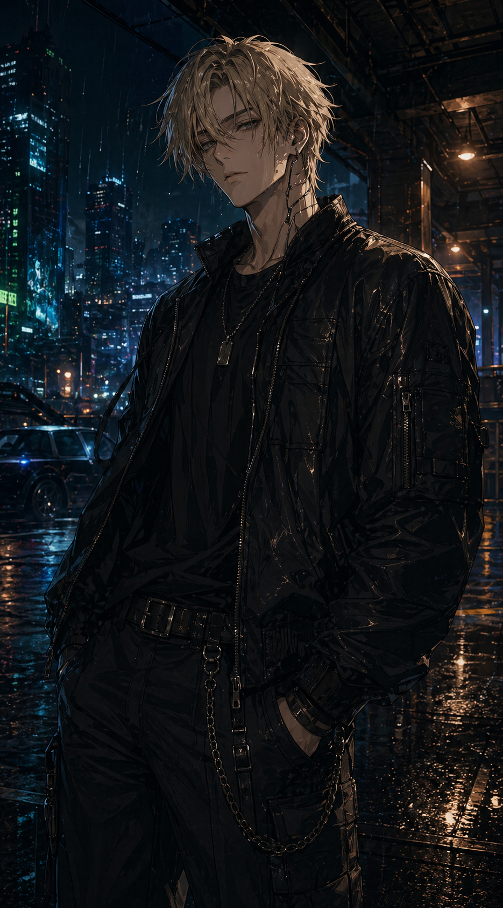
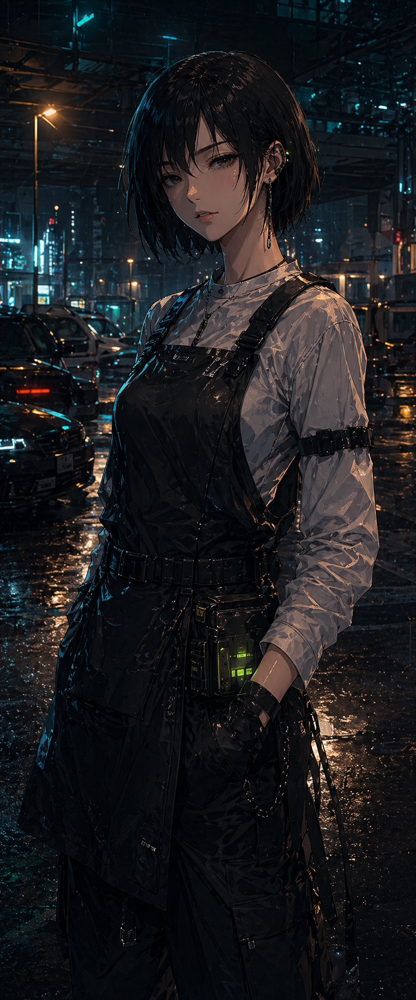

00:12 breachSignal found / Veyra-9 megacity / 2089
Будущее уже взломало тебя.
NEON VECTOR - кинематографичная action-RPG в открытом городе, где корпорации продают память, банды торгуют личностями, а каждый выстрел меняет баланс района.
72 сюжетных развилки
9 районов
180+ имплантов
PCPS5Xbox SeriesWishlist open
Ray traced rainNeural stealthReactive districtsBranching contractsNext-gen combat
Ray traced rainNeural stealthReactive districtsBranching contractsNext-gen combat
World premiere trailer
90 секунд города, который охотится на тебя.

00:31 pursuit
00:54 lockdown
01:18 escapeChoose your liability
Фракции не дают квесты. Они выставляют счета.

Helix Directorate
Корпоративные архитекторы города. Их солдаты не промахиваются, потому что покупают исход боя заранее.
Chrome Saints
Культ уличных хирургов и нелегальных апгрейдов. Верят, что душа - это устаревшая прошивка.
Null Choir
Невидимая сеть нетраннеров. Они стирают людей из камер, банков и воспоминаний.
Adaptive arsenal
Оружие собирается под стиль, а не под меню.
Каждый модуль меняет поведение: рикошеты по мокрому металлу, перегрев имплантов врага, тихий импульс для стелса или громкий разгон для открытой войны.
ARC-9 VANTA rail pistol
0.18s neural lock
5 ammo profiles

Modular armory
Собери билд для ночного рейда.
Optic slot
Barrel slot
Core slot
Build telemetry
00%
Перетащи модули в слоты или нажми на модуль, чтобы собрать билд на touch-устройствах.
Playable ghosts
Персонажи с прошлым, которое можно переписать.

Lead runner / close combat
KAEL RAIN
Бывший курьер Helix, который знает внутренние лифты шпиля, подпольные парковки и маршруты эвакуации лучше городских карт.
Reflex spine / rail pistol / street contractsDash break: быстрый рывок через линию огня с окном контратаки.

Netrunner / signal architect
MIRA VALE
Тихий архитектор взлома: открывает закрытые районы, подменяет профили охраны и превращает камеры города в союзников.
Neural deck / spoof identity / district controlID spoof: временно меняет профиль доступа в закрытых районах.
Dual-protagonist runs
Контракты можно проходить как одним героем, так и дуэтом: Каэль держит улицу, Мира ломает городскую сеть.
- Kael route: ближний бой, погони, силовые входы и рискованные сделки с фракциями.
- Mira route: скрытые маршруты, подмена камер, социальный взлом и контроль районной тревоги.
- Duo route: синхронные миссии, где один герой меняет физический мир, а второй переписывает цифровой.
Scroll-driven mission
Одна миссия. Четыре состояния города.
Signal breach
Контракт появляется в сети Null Choir, город еще не знает, что цель уже выбрана.
Glass elevator
Игрок поднимается через корпоративный шпиль, а районы начинают менять patrol routes.
District heat
Helix закрывает мосты, дроны включают searchlight-сетки, толпа реагирует на тревогу.
Memory fork
Финал зависит от того, кого ты стер из системы и какой район оставил без защиты.
Neural optics
Переключи обычное зрение на neural overlay.
Open world map
Veyra-9 реагирует на каждую ошибку.
Heat index 18-92%
District feed
Helix Spire
Вертикальный корпоративный район: чистый воздух наверху, вечная ночь внизу.
PC requirements
Системные требования
Minimum / 1080p
- CPU
- Ryzen 5 3600 / i5-10400F
- GPU
- RTX 2060 / RX 6600
- RAM
- 16 GB
- Storage
- 95 GB SSD
Recommended / 1440p
- CPU
- Ryzen 5 7600 / i5-13600K
- GPU
- RTX 4070 / RX 7800 XT
- RAM
- 16 GB
- Storage
- 95 GB NVMe SSD
Ultra / 4K RT
- CPU
- Ryzen 7 7800X3D / i7-14700K
- GPU
- RTX 4080 Super / RX 7900 XTX
- RAM
- 32 GB
- Storage
- 95 GB NVMe SSD
Overdrive / 4K PT
- CPU
- Ryzen 9 7950X3D / i9-14900K
- GPU
- RTX 4090 / next-gen flagship
- RAM
- 32 GB+
- Storage
- DirectStorage NVMe
Neural deck diagnostics
Проверь системы костюма перед выходом в город.
suit.scan()
- Phase Shift UIscan
- Context Analyzerscan
- Mission Syncscan
- Secure Commsscan
- Tactical Intel Layerscan
- Offline Field Cachescan
- Controller Uplinkscan
> boot neon-vector.runtime
> type help, scan city, open map, theme
Controller uplink
Controller uplink
Геймпад не подключен
Подключи контроллер и нажми любую кнопку: костюм проверит канал управления и отклик модулей.
Suit preferences
Control room
Профиль костюма сохраняется автоматически и восстанавливается при следующем запуске.Field codex
Цвета, интерфейсы и сигналы Veyra-9.
Anybody + Space Grotesk, aggressive AAA scale.
Сканирование, магнитные кнопки, смена режима костюма и синхронизация миссии.
FAQ / Field Intel
Вопросы, которые обычно задают перед входом в Veyra-9.
Когда начинается действие NEON VECTOR?
События разворачиваются в 2089 году в Veyra-9 — вертикальном мегаполисе, где память, репутация и доступ к районам стали валютой.
Что делает город реактивным?
Районы меняют уровень тревоги, маршруты патрулей, цены на черном рынке и поведение фракций после каждого контракта.
Можно ли играть разными стилями?
Да. Ghost, Shock и Riot меняют темп прохождения: скрытность, нейронный контроль, перегрев имплантов или силовой прорыв.
Что дают импланты?
Импланты открывают новые маршруты, варианты диалогов, боевые реакции и способы влиять на память NPC.
Что такое Operation: Glass Saint?
Это центральный контракт первой главы: проникновение в Helix Spire, кража ядра ИИ и побег из города, который уже знает твое лицо.
Choose edition
Выбери способ войти в Veyra-9.
Base contract
Игра, цифровой артбук и стартовый набор имплантов.
Night runner
Саундтрек, скины Kael/Mira и эксклюзивный Chrome Saints контракт.
Glass saint
Все бонусы Deluxe, цифровая карта Veyra-9 и набор оружейных модулей.
Wishlist signal live
Добавь в wishlist до того, как город добавит тебя.
01Rain physics
02Reactive crowds
03Vertical missions
04Neural choices